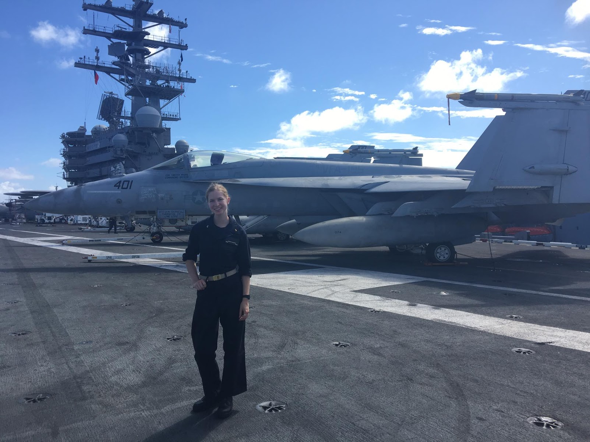

 Hi, I'm Aidan. I grew up in Milwaukee, WI. I have four older sisters, a twin sister, two dogs and a cat. I am currently a Junior studying Human Factors Enginnering at Tufts University. Here at Tufts, I am involved in Food Rescue and STOMP, a program where I teach engineering curriculum in an elementary school every week. I am also in the Naval Reserve Officer Training Corps at the MIT unit. There, I learn skills and take classes that prepare me to comission as an officer after graduation. After commissioning, I hope to train to fly E-2's one day! In my free time I enjoy hiking, biking, traveling, poetry, and am an avid tea-drinker.